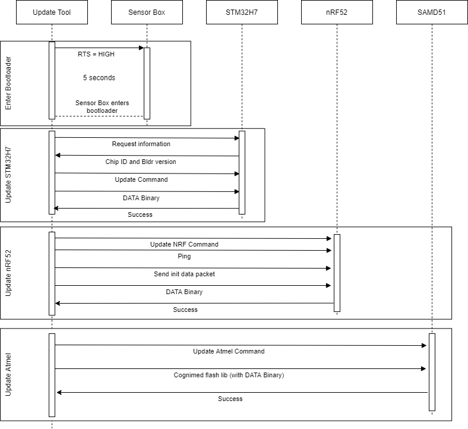

|
Software Update Tool
Beta 2.1.0
Tool that updates the Software of the smart-sync device.
|


|
|
Software Update Tool
Beta 2.1.0
Tool that updates the Software of the smart-sync device.
|
|
Here is being developed the new C# Software Updating Tool for the smart-sync device.
The files to be flashed at the development project should be under "..\P01_SW_Updt\p01-sw-software-update\CS_Updt_Tool\SwUpdate\SwUpdtTests\bin\Debug\net5.0\data\" At the published p01-update.exe file, the flashing files should be placed under a folder named "data", that must be at the same location as the p01-update.exe.
Please run the doxygen configuration to get the html output under the Doc/Doxygen/Configuration for a better understanding of the developed code. Download doxygen.
During the update, ignore warnings that might appear on the Sensor Box display.
(p01-update-VER.exe) (only works to update a fully functional device)
To update the hole device, please follow the instructions:
This way the tool can update the software of the device with the binaries the user choses, independently of the current version on the device:
(The optional parameters "-sw MCU "indicates the part of the device to be updated, "-p PATH" indicates the path of the folder with the binaries)
If updating the Sensor Box, ignore the warning on the display.
Within the project folder "MainProject" run on the Terminal "dotnet publish -r win7-x64 -p:PublishSingleFile=true -o dist/ --self-contained true p01-update.csproj"
Within the project folder "MainProject" run on the Terminal "dotnet publish -r osx-x64 -p:PublishSingleFile=true -o dist/ --self-contained true p01-update.csproj"
Read the instructions under .\Modules\ClientExecutable and run the build_client_exe.bat file.
Alternatively, follow the instructions below: (Based on the generic instructions (link))
Setup the config.txt It is recommend to use NotePad++ to edit this text file as it will need to be encoded in UTF-8. The following instructions are using notepad++. Right-click and choose "Edit with NotePad++ Click the "Encoding Menu" and choose "Encode in UTF-8" Enter something like this:
;!@Install@!UTF-8!
Title="p01-update-VER"
BeginPrompt="Do you want to install p01-update-VER?"
RunProgram="p01-update-VER.exe"
;!@InstallEnd@!
Edit this replacing [p01-update-VER] with the product name. Notes on the parameters and options for the setup file are here.
CheckPoint There should now be a folder "c:\Install" with the following 3 files:
p01-update-VER.7z 7zSD.sfx config.txt
Create the archive
Open a cmd window, Window + R --> cmd --> press enter
In the command window type the following
cd \ cd Install copy /b 7zSD.sfx + config.txt + p01-update-VER.7z p01-update-VER.exe
Look in c:\Install and you will now see there is a p01-updater-VER.exe
You are finished
Run the installer
Double click on p01-updater-VER.exe and it will prompt with the configured message. Click OK and the p01-updater-VER.exe will run.
Executes the code that updates the full device and feedbacks the state during the update. Current inputs can be the Com Port name, the device type and the flashing files path. Outputs in which state it is during the update and creates a log file at the Desktop folder.
Interface of the Updater tool. Has the main methods for the update.
Handles the interaction and update of the STM32 microcontroller.
Handles the interaction and update of the Wireless device.
Handles the interaction and update of the Display device.
Interface of the Serial Communication. Has the main methods for the Serial Communication between Ports.
Has several methods in order to deal with the Serial Communication between the user and the devices.
Has several methods in order to log the program state, interactions and results during its operation.

Test the serial communication components.
Integration Tests that test methods for the update of the devices.